Serial Explorer
Description
The Serial Explorer app creates a connection to a serial port on your machine. After you connect to a serial port, you can communicate with it, plot and analyze data, export data to the workspace, and generate MATLAB® code.
Using this app, you can:
Configure serial port communication properties.
Send binary or string data to the connected serial port.
Read binary or string data sent from the connected serial port.
Plot data in a figure window.
Analyze data by viewing it in the Signal Analyzer (Signal Processing Toolbox) app.
Export data to the workspace.
Generate a MATLAB Live Script file that uses the
serialportinterface.
Open the Serial Explorer App
MATLAB Toolstrip: On the Apps tab, under Test and Measurement, click the app icon.
MATLAB command prompt: Enter
serialExplorer.
Examples
In this example, write ASCII-terminated data to a serial port device and read data back from it. The device in this example is an Arduino® Uno that has already been programmed with custom commands and responses.
Open the Serial Explorer app either from the Apps tab in the MATLAB toolstrip or the MATLAB command prompt.
Select the serial port device that you want to communicate with. In this example, the device is connected to COM4.

Configure Connection and Communication
properties from the Property Inspector. Specify these device
properties before writing and reading data to match the appropriate value for the
connected device. For this example, change the BaudRate to
38400.
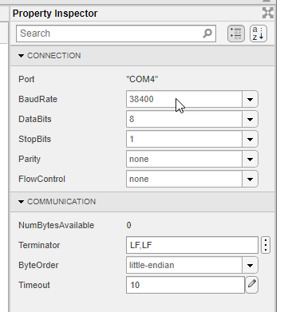
Some serial port devices can accept string queries and respond to them. In this example, the connected Arduino Uno has been programmed to receive and respond to customized string commands. The commands in this example do not work for other devices.
Send the Send Status? command to the device. In the
Write section, set the Data Format to
ASCII-Terminated String. The Data Type
changes to string since that is the only possible option.
Specify the Data to Write as Send Status?.
Click Write to write the data to the serial port device. For
ASCII-terminated string write operations, the write terminator specified by the
Terminator property is automatically appended to the data being
written.
You can view the response to this command by reading from the serial port device. In
the Read section, set the Data Format to
ASCII-Terminated String, which changes the Data
Type to string. Read the data from the device by
clicking Read. Data is read until the first occurrence of a
terminator.
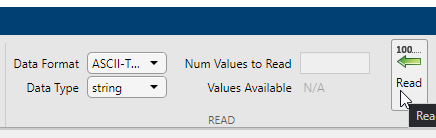
View both the write and read operations in the Communication
Log pane. The read operation shows the message Arduino connected to 'COM4'. You can select a row to export it as a
variable to the workspace by following the steps in Export Data from Communication Log and Generate MATLAB Script.
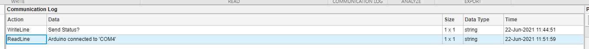
The MATLAB Code Log pane shows the code for these operations. You can export this code as a MATLAB Live Script file by following the steps in Export Data from Communication Log and Generate MATLAB Script.
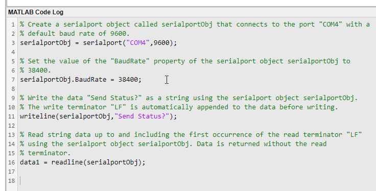
In this example, write ASCII-terminated data to a serial port device and read data back from it. The device in this example is an Arduino Uno that has already been programmed with custom commands and responses.
Open the Serial Explorer app from either the Apps tab in the MATLAB toolstrip or the MATLAB command prompt.
Select the serial port device that you want to communicate with. In this example, the device is connected to COM4.
Configure Connection and Communication
properties from the Property Inspector. Specify these device
properties before writing and reading data to match the appropriate value for the
connected device. For this example, change the BaudRate to
38400.
Some serial port devices can accept string queries and respond to them. In this example, the connected Arduino Uno has been programmed to receive and respond to customized string commands. The commands in this example do not work for other devices.
Send the Send Sine-Wave Data command to the device. In the
Write section, set the Data Format to
ASCII-Terminated String. The Data Type
changes to string since that is the only possible option.
Specify the Data to Write as Send Sine-Wave
Data. Click Write to write the data to the serial
port device. For ASCII-terminated string write operations, the write terminator
specified by the Terminator property is automatically appended to
the data being written.
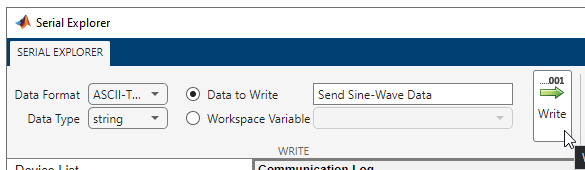
Send another command to the device. In the MATLAB command prompt, create a workspace variable for this command.
command = "Send Arbitrary Waveform";Select Workspace Variable and select the
command option. Click Write.
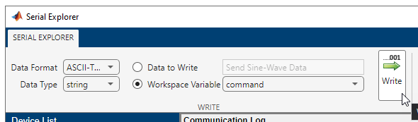
Before reading data from the serial port device, you must specify the correct data
format and type. In this example, the responses to the string commands are stored as
binary data with single precision. In the Read section, set the
Data Format to Binary, and the
Data Type to single. The
Values Available parameter is 300. The first
100 values are the response to the Send Sine-Wave Data command
and the remaining 200 values are the response to the Send Arbitrary
Waveform command.
Specify the Num Values to Read as 100.
Read the first 100 values of the data from the serial port device by clicking
Read.
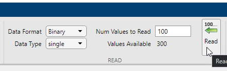
If you do not specify a value for the Num Values to Read parameter, you can read all the available values. Read the remaining 200 values by clearing the Num Values to Read parameter and clicking Read.
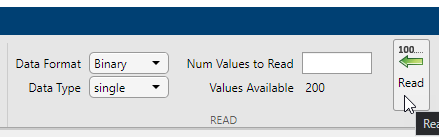
View both the write and read operations in the Communication Log pane. You can select a row to plot it, view it in the Signal Analyzer app, or export it as a variable to the workspace. Select the data from the first read operation.
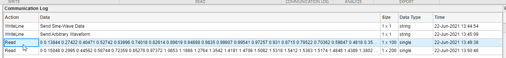
Click Plot in the Analyze section.

A new figure window with a plot of the data opens. You can modify the plot and figure from the command window.
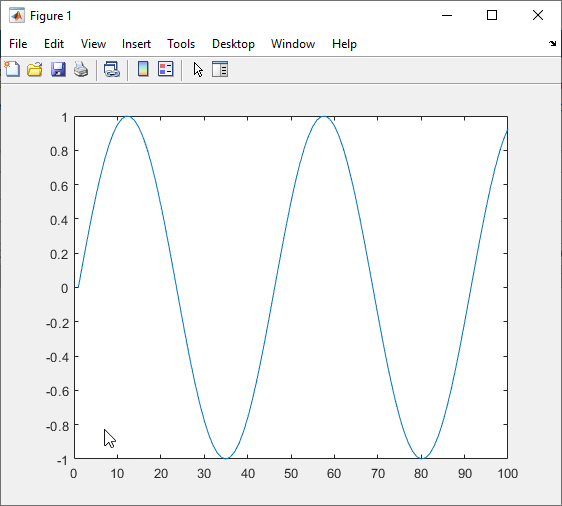
Select the other response data and click Plot again. Another figure window with a plot of the data opens.
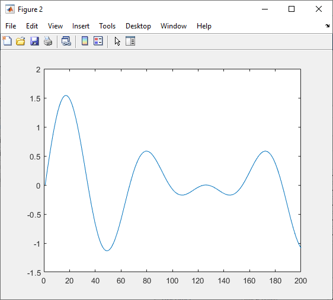
The MATLAB Code Log pane shows the code for these operations (except for plot creation). You can export this code as a MATLAB Live Script file by following the steps in Export Data from Communication Log and Generate MATLAB Script.
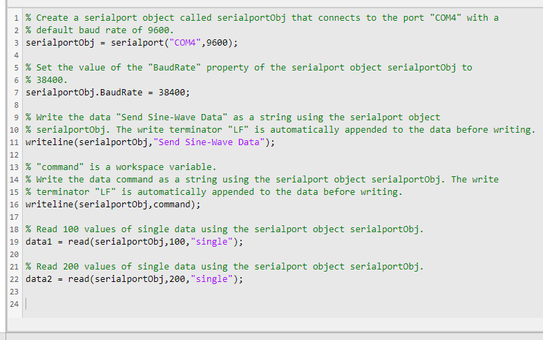
In this example, plot a row of data from the Communication Log in a new figure window. You can plot any numeric data that you have written to or read from the serial port.
The Communication Log captures all the data that you have written to or read from the connected serial port.
Select a row of data.

Click Plot in the Analyze section.
A new figure window with a plot of the data opens. You can modify the plot and figure from the command window.

In this example, use the different options for exporting data and app interactions.
The Communication Log captures all the data that you have written to or read from the connected serial port.
Select a row of data.
Export this row of data to the workspace as the variable specified in Workspace Variable. The app provides a default variable name, but you can edit it. Change the variable name, click Export, and select the Export Selected Row option.

You can also export the entirety of the Communication Log to
the workspace as a timetable. Change the variable name, click
Export, and select the Export Communication
Log option.

Besides exporting data, you can also export the code from the MATLAB Code
Log pane. This pane contains all serialport object
creation, write, read, and property configuration operations that you do in the
app.
Generate a MATLAB Live Script file and open it in the Live Editor by clicking Export and selecting the Generate MATLAB Script option.

After the Live Script file opens, you can modify the code to fit your needs and save the file.
Parameters
Write Section
Specify the data type of the data to write to the serial port. This parameter determines the number of bytes to write for each value and the interpretation of those bytes as a MATLAB data type.
Dependencies
If you set the Data Format to ASCII-Terminated
String, the only possible value for this parameter is
string.
This parameter can be set to uint64 or
int64 only if you select the Workspace
Variable option instead of Data to Write.
Specify the data to write to serial port. The data is written as the type specified by Data Type, regardless of the format in this parameter.
Select either this parameter or Workspace Variable to write data.
Select an existing workspace variable to write to the serial port. The data is written as the type specified by Data Type, regardless of the data type of the variable in the workspace.
If Data Format is Binary, you can
select the following types of workspace variables:
Row (1-by-
N) or column (N-by-1) vector of numeric values1-by-
Ncharacter vector1-by-1 string scalar
If Data Format is ASCII-Terminated
String, you can select the following types of workspace variables:
1-by-
Ncharacter vector1-by-1 string scalar
Select either this parameter or Data to Write to write data.
Click this button to write the data specified in Data to Write
or Workspace Variable to the serial port as the specified
Data Type. If Data Format is
ASCII-Terminated String, the write terminator specified by
the Terminator
property is automatically appended to the data being written.
This button is equivalent to performing the write or writeline functions.
Read Section
Specify the data type of the data to read from the serial port. This parameter determines the number of bytes to read for each value and the interpretation of those bytes as a MATLAB data type.
Dependencies
If you set the Data Format to ASCII-Terminated
String, the only possible value for this parameter is
string.
Specify the number of values to read as a positive integer. This parameter must be less than or equal to Values Available. If you leave this parameter empty, the app reads all available values from the serial port using the specified Data Type.
Dependencies
To enable this parameter, set Data Format to
Binary.
This parameter is read-only.
This is the number of values available to read in the format specified by Data Type.
Dependencies
To enable this parameter, set Data Format to
Binary.
Click this button to read data from the serial port. If Data
Format is Binary, read the number of values
specified by Num Values to Read in the form specified by
Data Type. If Data Format is
ASCII-Terminated String, read data until the first
occurrence of the read terminator specified by the Terminator
property.
This button is equivalent to the read or readline
functions.
Communication Log Section
View the data in the Data column of the Communication
Log as Binary, ASCII,
or Hexadecimal, as applicable based on the data type. This
parameter does not change the original value or data type of the data. For more
information about these formats, see Data Type Conversion.
Click this button to clear all the contents of the Communication Log.
Analyze Section
Click this button to open a new figure window that plots the data currently selected in the Communication Log. You can select only one row of data, and the selected data must be numeric.
Unlike Write and Read, this operation is not captured in the MATLAB Code Log pane.
Click this button to launch the Signal Analyzer (Signal Processing Toolbox) app and send it the data currently selected in the Communication Log. You can select only one row of data, and the selected data must be a numeric vector.
You must have Signal Processing Toolbox™ installed to use the Signal Analyzer app.
Export Section
Edit the name of the workspace variable that you want to export data to. The
Export Selected Row and Export Communication
Log options in the Export drop-down menu save your
data in the workspace as the variable specified in this field.
You must specify a valid MATLAB variable name that does not already exist in the workspace. If you specify an invalid name, it is automatically changed to a valid variable name.
Click this button to select one of the following options for exporting data from this app:
Export Selected Row— Save the data currently selected in the Communication Log to the workspace as the variable specified by Workspace Variable.Export Communication Log— Save all of the Communication Log data to the workspace as atimetablewith the variable name specified by Workspace Variable.Generate MATLAB Script— Generate a MATLAB Live Script file populated with the content in MATLAB Code Log and open it in the Live Editor.
Property Inspector
This parameter is read-only.
Name of the connected serial port, returned as a character vector.
Rate at which bits are transmitted for the serial interface, in bits per second. You can select one of the available options or specify your own value.
Number of data bits to transmit over the serial interface.
Number of bits used to indicate the end of a byte.
Parity bit type added to data transmitted by serial port. You can use this parameter to add a parity bit (also referred to as a check bit) to your data. Adding a parity bit to a string of binary code is a method of detecting errors in data transmission by ensuring that the total number of 1-bits is even or odd.
The value of the parity bit is determined by the number of 1s in a given set of bits and is set as follows.
| Parity Bit Type | Parity Bit Value | |
|---|---|---|
| If number of 1s is even | If number of 1s is odd | |
none | No parity bit set | No parity bit set |
even | 0 | 1 |
odd | 1 | 0 |
Process of managing the rate of data transmission on your serial port. Select
none to have no flow control,
hardware to let your hardware determine the flow control,
or software to let your software determine the flow
control.
This parameter is read-only.
Number of bytes available to read, returned as a numeric value.
Terminator characters for reading and writing ASCII-terminated data, specified as
LF, CR,
CR/LF, or a number from 0 to 255. The read terminator is
followed by the write terminator and the two are separated by a comma. Click the
vertical ellipsis icon  to specify read and write terminator character values
separately.
to specify read and write terminator character values
separately.
Sequential order in which bytes are arranged into larger numerical values. If the
byte order is little-endian, then the serial port stores the
first byte in the first memory address. If the byte order is
big-endian, then the serial port stores the last byte in
the first memory address.
Configure the byte order to match the appropriate value for your serial port.
Allowed time in seconds to complete read operations, specified as a numeric value.
Version History
Introduced in R2021b